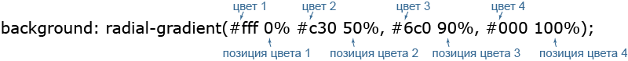

Если в CSS3 добавить градиент на фон, то он будет находится только слева сверху. Для того чтобы растянуть на всю страницу, необходимо прописать следующие строки:
html {height: 100%;}
body {height: 100%; margin: 0;
background-repeat: no-repeat;
background-attachment: fixed;}Для корректного отображения цвета фона в различных браузерах необходимо добавлять префиксы, а для Internet explorer - использовать фильтры.
По умолчанию, линейный градиент движется с верхней до нижней части элемента, плавно переходя между первым и вторым значением цвета. Это направление, однако, может быть изменено с помощью ключевых слов или значения угла, заданным перед любыми значениями цвета.
Например, если мы хотим, чтобы градиент в элементе двигался слева направо, мы можем использовать значение to right для указания направления, в котором линейный градиент должен продвигаться. Ключевые слова также могут быть объединены. Если мы хотим, чтобы градиент переходил от левой верхней до правой нижней части элемента, мы можем использовать значение ключевого слова to right bottom.
Когда мы применяем диагональный градиент в не совсем квадратном элементе, градиент не переходит напрямую из одного угла в другой. Вместо этого градиент определит абсолютный центр элемента, поместит опорные точки в противоположных углах, откуда он должен продвигаться и только затем двинется в направлении угла, заданном в значении. Эти углы, которые перемещает градиент, называются «волшебные уголки», так как они не являются абсолютными.
Кроме ключевых слов также допускаются углы. Если мы хотим, чтобы наш градиент двигался к левой верхней части элемента мы можем использовать значение угла 315deg, также если мы хотим, чтобы наш градиент двигался к правой нижней части элемента, мы можем использовать значение 135deg. Этот же подход может быть применён для любого значения угла, от 0 до 360º.
|
В то время как линейный градиент идеально подходит для градиентного перехода от одного направления к другому, часто возникает необходимость в радиальном градиенте. Радиальные градиенты работают так же, как линейные и повторяют большинство из тех же значений. Для радиальных градиентов используют функцию radial-gradient().
div {
background: #466368;
background: radial-gradient(#648880, #293f50);
}Радиальные градиенты работают изнутри наружу элемента. Таким образом, первый цвет заданный в функции radial-gradient() будет располагаться в абсолютном центре элемента, а второй цвет будет находиться на внешней стороне элемента. Браузер затем создаст переход между этими двумя цветами. Одним из основных отличий между радиальными и линейными градиентами является то, что радиальные градиенты могут быть достаточно сложными, со значениями положения, размером, радиусом и так далее.
Начальную точку градиента можно задавать в любом месте элемента, для этого вначале указывается её позиция. Позиция точки пишется аналогично значениям свойства background-position с помощью ключевых слов или доступных единиц измерения вроде пикселей или процентовб например:
Возможны две формы радиального градиента — круг (circle) и эллипс (ellipse), которые различаются своим видом. По умолчанию устанавливается эллиптический градиент.
div {
background:radial-gradient(circle at 20px 50%, #648880 10%, #fff, #fff 80%, grey);
}Обратите внимание на синтаксис, если мы хотим сочетать форму градиента с указанием начальной точки, то вначале идёт ключевое слово circle, а потом уже через пробел позиция.
Наряду с типом градиента можно задавать и его размер, который зависит от применяемых ключевых слов. Размер пишется через пробел после типа градиента (circle или ellipse).
Под "границей градиента" понимается пространство в котором происходит градиентная смена цветов, остальное пространство заливается вторым цветом.
closest-side Форма градиента совпадает с ближайшей к нему стороной блока.
closest-corner Форма градиента вычисляется на основании информации о расстоянии до ближайшего угла блока.
farthest-side Градиент распространяется до дальней стороны блока.
farthest-corner Форма градиента вычисляется на основании информации о расстоянии до дальнего угла блока.
| background: radial-gradient(circle...) | |||
| background: radial-gradient(circle closest-side at 30px 20px, #fff, #000); | background: radial-gradient(circle closest-corner at 30px 20px, #fff, #000); | background: radial-gradient(circle farthest-side at 30px 20px, #fff, #000); | background: radial-gradient(circle farthest-corner at 30px 20px, #fff, #000); |
| background: radial-gradient(ellipse...) | |||
| background: radial-gradient(ellipse closest-side at 30px 20px, #fff, #000); | background: radial-gradient(ellipse closest-corner at 30px 20px, #fff, #000); | background: radial-gradient(ellipse farthest-side at 30px 20px, #fff, #000); | background: radial-gradient(ellipse farthest-corner at 30px 20px, #fff, #000); |
Для центральной начальной точки градиенты вроде closest-corner и farthest-side совпадают. Но градиенты будут различаться, если установить начальную точку, отличную от центра, например в углу.
Подобно линейному градиенту можно указывать несколько цветов, устанавливать их позицию и делать резкие переходы между цветами. Для этого произвольное количество цветов перечисляется через запятую, а после значения цвета через пробел идёт его позиция, которая может быть задана в пикселях или процентах. Крайние значения 0% и 100% можно не писать, они подразумеваются автоматически.
Когда позиция одного цвета совпадает с позицией другого иногда получаются резкие переходы - «лесенка» из пикселей. Чтобы немного сгладить переходы добавляют разницу в один процент.
{
background: radial-gradient(circle at center,
#000e5e 24%, #fff 25%, #fff 50%, #c70102 51%, #c70102);
}Как минимум, градиентный фон переходит от одного цвета к другому, однако, мы можем добавить несколько цветов к градиенту и заставить браузер сделать по всем ним переход. Для этого мы добавим стоп-цвета в данную функцию градиента — с запятыми, которые отделяют один цвет от другого.
div {
background: #648880;
background:linear-gradient(to right, #f6f1d3, #648880, #293f50);
}По умолчанию браузер будет позиционировать каждый стоп-цвет на равном расстоянии от следующего и переходить между ними соответственно. Если требуется больше контроля над тем, как желательно расположить цвета, то их места в градиенте могут быть определены для каждого цвета. Место должно быть объявлено как значение размера и идёт после значения цвета. Если не указано иное, то первый цвет будет позиционироваться на 0%, а последний цвет на 100%.
div {
background: #648880;
background:linear-gradient(to right, #f6f1d3, #648880 85%, #293f50);
}<div class="txt box7">box7</div>.box7 {
display:block; margin:0px auto; padding:0 20px;
width:300px; height:250px;
border-top:20px solid #3ACFD5; /* цвет верхней границы */
border-bottom:20px solid #3a4ed5; /* цвет нижней границы */
border-radius:10px;
/* свойства width и height включают в себя
значения полей и границ, но не отступов */
-webkit-box-sizing:border-box;
-moz-box-sizing:border-box;
box-sizing:border-box;
/* положение 2-х фоновых изображений: слева и справа; */
background-position:0 0, 100% 0;
background-repeat:no-repeat;
-webkit-background-size:20px 100%; /* размер фонового изображения */
-moz-background-size:20px 100%; /* 20px - ширина */
background-size:20px 100%; /* 100% - высота */
/* само фоновое изображение, цвет начинает меняться сверху (top) */
/* задаётся для левого и правого backgrounda */
background-image:-webkit-linear-gradient(top, #3acfd5 0%, #3a4ed5 100%),
-webkit-linear-gradient(top, #3acfd5 0%, #3a4ed5 100%);
background-image:-moz-linear-gradient(top, #3acfd5 0%, #3a4ed5 100%),
-moz-linear-gradient(top, #3acfd5 0%, #3a4ed5 100%);
background-image:-o-linear-gradient(top, #3acfd5 0%, #3a4ed5 100%),
-o-linear-gradient(top, #3acfd5 0%, #3a4ed5 100%);
background-image:linear-gradient(to bottom, #3acfd5 0%, #3a4ed5 100%),
linear-gradient(to bottom, #3acfd5 0%, #3a4ed5 100%);}Браузеры, которые поддерживают данное свойство: Chrome, Internet Explorer 11, Firefox, Safari, и Opera. Данное свойство работает только с «квадратными» блоками. То есть вы не сможете сделать закругленные углы границы с помощью свойства border-radius.
<div class="txt box8">box8</div>.box8{
display:block; margin:0px auto;
width:calc(50% - 50px); height:130px; padding:0;
border:20px solid transparent; /* прозрачная граница в 20px */
/* наша собственная граница */
-moz-border-image:-moz-linear-gradient(top, #3acfd5 0%, #3a4ed5 100%);
webkit-border-image:-webkit-linear-gradient(top, #3acfd5 0%, #3a4ed5 100%);
border-image:linear-gradient(to bottom, #3acfd5 0%, #3a4ed5 100%);
border-image-slice:1;} /* смещение фона границы */<div class="txt box9">box9</div>.box9{
width:calc(50% - 50px); height:90px;
display:block; margin:0px auto;
padding:10px 10px 10px 40px; position:relative;
background:-webkit-repeating-linear-gradient( 0deg, #f9f9f9, #f9f9f9 20px, #cccccc 21px);
background:-moz-repeating-linear-gradient( 0deg, #f9f9f9, #f9f9f9 20px, #cccccc 21px);
background:-o-repeating-linear-gradient( 0deg, #f9f9f9, #f9f9f9 20px, #cccccc 21px);
background:repeating-linear-gradient( 0deg, #f9f9f9, #f9f9f9 20px, #cccccc 21px);
background-size:100% 21px;}
.box9:before{
content:""; display:block;
height:100%; width:4px;
border-left:4px double #FCA1A1;
position:absolute; left:30px; top:0;}